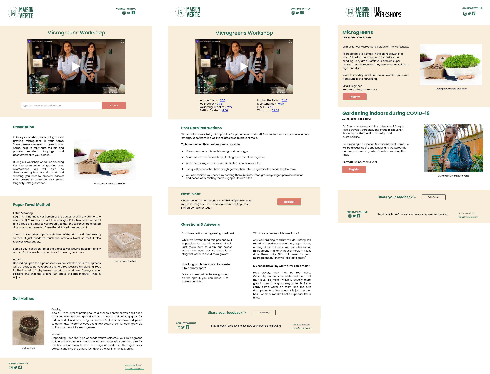
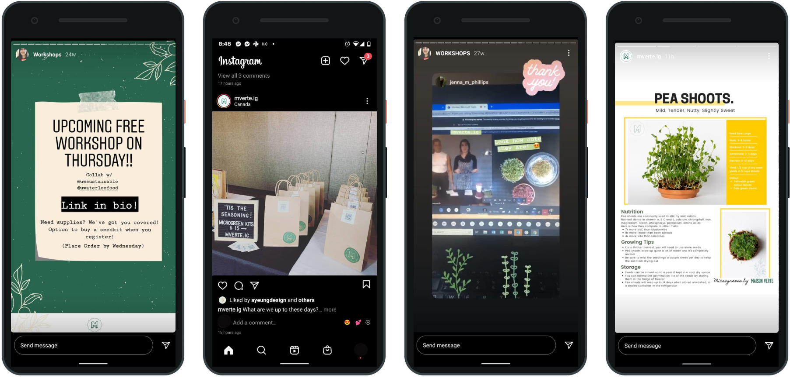

Maison Verte
Workshop and Brand Design

Overview
Description
Puddleshaker is a Not-For-Profit organization that connects individual designers and organizations together to work on solutions to real-life problems. We connected with Maison Verte, an organization focusing on urban farmers and creating a space to share, educate and promote food system transparency and food security.
Challenge
To educate and promote their vision, Maison Verte needed assistance in creating a workshop that could tailor to their audience, promote and educate.
We needed to come up with a system that could resist the virtual transition, stemming from COVID-19, and creating a brand that could support the workshop idea.
Role & Responsibilities
Role: Workshop Design Team Member, Project Management
Tasked with developing the correct flow for the workshop - including ways to improve engagement and facilitate the process by developing a template-like approach.
I was also tasked with leading team meetings, keeping track of deadlines and facilitating communication between all stakeholders.
Design Process
Research
We conducted market research, platform research and user research via Google surveys and reaching out to gardening communities.
Findings:
- 51.4% Had previously attended an indoor workshop
- 39.4% Would pay between $10-$25 for a workshop
- 60.6% Interested in basics of hydroponics for leafy greens
- 72.7% Had a garden of their own
- 41.9% Are between the ages of 25-34
- 93.5% Identified as female
- Top platforms: Facebook, Email and Instagram
Ideation
Maison Verte had a vision to provide services to metropolitans, students, and educators. From our findings and business requirements, we decided to tailor to an adult audience interested to learn about urban-farming and who are:
- Experienced gardeners, with urban-farming knowledge
- Experienced gardeners, new to urban-farming
- No prior gardening experience
Even though MV hoped to reach elementary schools, we felt it was best to create a more general process as a first stage.
From our research, we noted trends such as subscription boxes, the increase in zoom webinars, community driven visions, and best practices for workshops.
Prototyping
When it came to creating prototypes and visualizing our vision, we focused on three areas.

The first is the workshop time blocking and the requirements in the form of guidelines.
Secondly, to complement the workshop initiative, we included newsletters and fact sheets. Acting as additional resources and support to assist all parties.
Lastly, we wanted to focus on incentives to provide new and ongoing participation. For new and repeating participants, we wanted to focus on the social platforms indicated by the survey. For ongoing participants, we wanted to encourage ongoing participation by introducing a 3-tier knowledge system.
Final Design
Our final deliverables to MV, our client, were brand and workshop guidelines, Canva and Figma files, and our recommendations for both branding and workshop process in presentation format. You can see the presentation and guidelines
Key Take-Aways
COVID reshaped the gathering method:
MV was familiar with Zoom as a platform, the goal was to then work backwards from that and create the best participant experience possible.
Creating a profit:
Required a more organized and professional approach that could create trust and reliability. Encouraged the sale of materials rather than user participation. Time-blocked and set recommendations for the workshops.
Participants needed to be engaged in the long run:
We encouraged them to create an incentive that works best for the client economically. We gave the example of a 3-tier program that encouraged participants to reach knowledge achievements.
Form a sense of community via workshops:
We recommended MV to create newsletters and fact-sheets to help educate the community during and after a workshop. We also enhanced community engagement by enhancing the MV brand in social media.
Results:
Today MV has taken the majority of the recommendations and have adapted the workshop process for company-driven clients. Here is a capture of recent Instagram posts.
Reflection
The end of the project came once the deliverables were presented and the recommendations were made. Given the circumstances of the pandemic, I feel that this project needed further and continuous user acceptance testing. The need to adapt to the user is shown in MV's transition to target company-driven events rather than general workshops.
Go back to projects